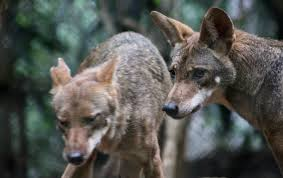
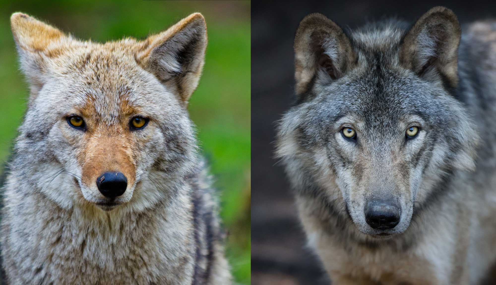

O coiote é um mamífero da família dos canídeos, a mesma dos lobos e dos cães. Ele vive principalmente na América do Norte e é conhecido por sua grande capacidade de adaptação, podendo ser encontrado em florestas, desertos, campos e até áreas próximas às cidades. Esse animal é onívoro, alimentando-se de pequenos animais, frutas, insetos e outros alimentos disponíveis em seu ambiente. Os coiotes costumam viver sozinhos ou em pequenos grupos familiares e são conhecidos por sua inteligência, agilidade e habilidade para sobreviver em diferentes condições. Sua expectativa de vida na natureza geralmente varia entre 10 e 14 anos.

Coyote é o famoso animal mudo da Warner Bros. Ele vive no deserto tentando capturar o Papa-Léguas usando planos absurdos e produtos defeituosos da marca ACME. Devido ao azar e à física dos desenhos, todas as armadilhas falham, e ele sempre acaba explodido ou caindo de penhascos.

Fora o coiote de Looney Tunes, o Coiote expandiu sua carreira em outras animações da Warner Bros. Nos anos 90, ele virou reitor e professor de armadilhas na série Tiny Toon Adventures, servindo de mentor para o jovem Calamity Coyote. Ele também fez aparições rápidas em Animaniacs e chegou a parodiar o monstro do filme Predador na ficção científica espacial Duck Dodgers.Nas telas de cinema, o personagem virou atleta nos filmes da franquia Space Jam, usando suas clássicas dinamites em quadra. Já no longa Coyote vs. Acme, ele vira o protagonista de uma batalha jurídica, processando a multinacional nos tribunais pelas constantes falhas de seus produtos. Existe também o lobo Ralph Wolf, que possui o design idêntico ao do Coiote, mas trabalha roubando ovelhas e batendo cartão de ponto em um desenho próprio.
Na mitologia de vários povos indígenas da América do Norte, o Coiote é conhecido como um "Trapaceiro" (*Trickster*). Ele não é um deus perfeito e poderoso, mas uma criatura inteligente e astuta que aparece em histórias para explicar a criação do mundo e diversos acontecimentos da natureza. Como costuma agir por impulso e cometer erros, suas aventuras também servem para ensinar lições sobre comportamento, mostrando por que os seres humanos nem sempre fazem as escolhas certas.
Na tradição Navajo, o Coiote age como Criador e Destruidor ao desafiar a perfeição estática planejada pelos primeiros deuses. Enquanto as divindades projetavam um universo de simetria absoluta, o Coiote usou seu sopro para deformar as montanhas e desviar os rios, criando a beleza selvagem e imperfeita da Terra. Essa mesma força impulsiva causou a destruição do Terceiro Mundo por meio de um dilúvio, após ele roubar os filhos do Monstro da Água, o que forçou a migração da humanidade para a superfície atual. Mais tarde, ele introduziu a mortalidade ao decretar que os homens deveriam morrer para valorizarem o tempo. Assim, ao trazer o caos e a morte, o Coiote destruiu a utopia dos deuses, mas criou a realidade dinâmica necessária para a evolução humana.
O coiote gostava de se exibir e queria que os outros animais o vissem como alguém muito importante e poderoso. Para isso, fingia ter qualidades e habilidades que não possuía, tentando enganar todos ao seu redor. Durante algum tempo, alguns animais acreditaram nele, mas suas mentiras acabaram sendo descobertas. Quando a verdade veio à tona, o coiote perdeu a confiança e o respeito dos outros. A história mostra que a arrogância e a desonestidade podem causar problemas, enquanto a honestidade e a humildade são mais valiosas
O coiote admirava a capacidade da águia de voar e acreditou que também conseguiria fazer o mesmo. Mesmo sendo avisado de que não poderia voar, insistiu em tentar e acabou caindo e se machucando. A história ensina que a arrogância e o excesso de confiança podem levar a erros, mostrando a importância da humildade e do reconhecimento dos próprios limites.
Em uma antiga lenda indígena, o Coiote observava o céu escuro e decidiu que queria enchê-lo de estrelas. Com a ajuda de outros animais, ele começou a espalhar pequenas luzes pelo céu de forma organizada. Porém, impaciente, o Coiote pegou um saco cheio de estrelas e o lançou para o alto. As estrelas se espalharam por todos os lados, formando os diferentes desenhos que vemos no céu durante a noite. A história ensina que a pressa e a falta de paciência podem mudar os resultados de algo que estava sendo feito com cuidado.

O lobo é o maior membro selvagem da família dos canídeos. Com um corpo robusto, patas largas e mandíbula poderosa, ele foi feito para a força. Os lobos dependem de uma estrutura social complexa, vivendo em alcateias altamente organizadas e hierárquicas. Essa união permite que eles cacem grandes presas, como alces e bisões. Por preferirem a vida selvagem intocada, os lobos são tímidos e evitam ao máximo o contato ou a proximidade com os seres humanos.O coiote, por outro lado, é significativamente menor e mais esguio, assemelhando-se a uma raposa de pernas longas. Ele possui orelhas maiores e um focinho mais fino e pontudo. Na natureza, o coiote atua de forma mais independente, caçando pequenos roedores e aves sozinho ou em pares. A sua principal característica é a inteligência adaptativa: enquanto o lobo perde espaço com o avanço do homem, o coiote aprendeu a prosperar em ambientes urbanos, modificando seus hábitos para sobreviver perto das cidades.